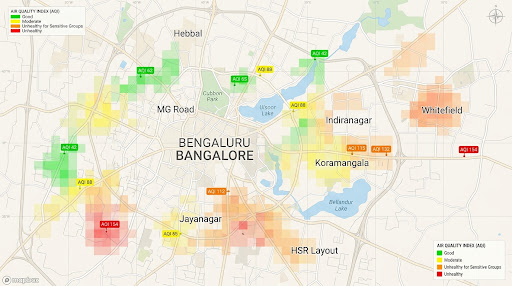

Read the air
from a photo.
Real-time hyperlocal air quality estimates powered by everyday smartphone photos.
The Air Monitoring Blind Spot
Official stations cost $20k+ and sit kilometers apart, missing local smoke, highway exhaust, and neighborhood microclimates.
Official Sensor Stations
Highly accurate but spaced 10–30 km apart. They miss street canyons, school zones, and transient pollution bursts.
Crowdsourced Street Optics
Every photo measures sunlight attenuation and atmospheric haze to deliver high-resolution street-level estimates.
How Skylens Works
Snap
Frame any portion of the daytime horizon. Our live alignment guide secures sun azimuth and optical depth.
Estimate
Optical AI models infer aerosol optical depth and particulate density calibrated against official stations.
Share & Navigate
Readings populate live community maps, helping pedestrians choose cleaner, low-exposure routes.
Bengaluru City Air Map
Live crowdsourced AQI readings across major Bangalore corridors with clean route recommendations.

Cubbon Park Green Sanctuary
Thick foliage dampens road emissions. Recommended for running and cycling commutes.
Try it right here
This is the real app on the real AWS backend. Tap Demo scan, pick a sample sky, and watch the pipeline run — no camera or GPS permission needed.
Demo mode uses bundled sample photos and a fixed Bengaluru location, so the live scan exercises the real upload → model → map pipeline without permission prompts.
Architecture
A single Flutter client talks to a serverless AWS backend. Every photo is scored by a vision model, fused with official stations, and written to a geohash grid that powers the map and routing.
Flutter app
Scan, Map, Route, Coach. Web build in the phone frame above.
API Gateway
HTTP API with a Cognito JWT authorizer and CORS for the web origin.
Lambda functions
upload-url, scan, map, route, coach — plus a Cognito guest trigger.
Data & model
S3 images, DynamoDB grid, SageMaker vision model, Bedrock coach.
Seven services, one job each
Everything runs serverless, so there is nothing to keep alive between demos.
Guest sign-in so judges can try instantly without an account.
Single HTTPS entry point that checks JWTs and applies CORS.
One function per endpoint; scales to zero when idle.
Scans and geohash cells; the map and routing read straight from it.
Private bucket for photos and the model artifact, with a 30-day expiry.
Serverless endpoint running the sky-photo AQI classifier.
Powers the Air Coach, with a canned reply if the model is unavailable.
What this is, and is not
Estimates, not measurements
A sky photo gives an optical estimate of particulates, not a calibrated ground sensor reading.
Model accuracy varies
The classifier is accurate to about one AQI band, not to a single number. We show a confidence range, not false precision.
Coverage is thin
The map is only as good as the crowdsourced scans in an area. Seeded data fills the gaps and is labelled as such.
Team & links
Built for the AWS Open-Source Environmental AI Hackathon.